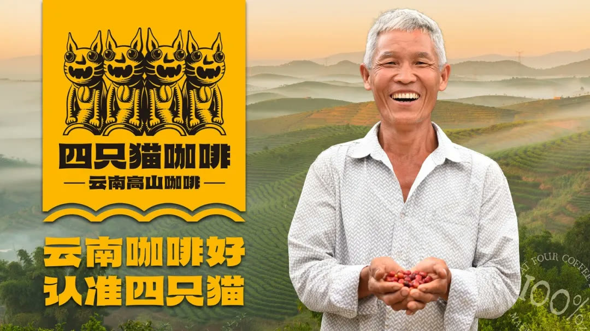

01 · 母体
先为企业立命，再为品牌定型
事业母体回答企业长期做什么，文化母体提供大众熟悉的认知资源，两者共同决定品牌不应随流量变化而摇摆。

02 · 三角
品牌三角统一产品、顾客与企业能力
电商产品变化快，更需要稳定的品牌核心。品牌三角为新品、内容和直播表达提供共同判断标准。

03 · 符号
一个超级符号统领多个定位
四只猫角色可适配不同产品卖点，但始终保留共同识别，使新品借用主品牌认知而不各自起名造符号。

04 · 经营
回到母体、成为母体、壮大母体
内容与产品不断从母体中产生，又通过销售和传播扩充母体，形成比单次爆款更长期的品牌增长。